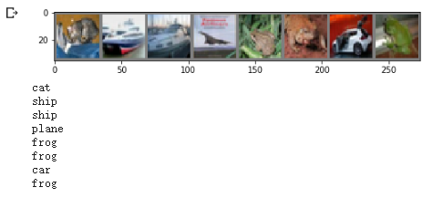

对于PyTorch的学习，基于Colab平台，主要内容来自于OUCTheoryGroup
对于视觉数据，PyTorch 创建了一个叫做 totchvision 的包，该包含有支持加载类似Imagenet，CIFAR10，MNIST 等公共数据集的数据加载模块 torchvision.datasets 和支持加载图像数据数据转换模块 torch.utils.data.DataLoader。
下面将使用CIFAR10数据集，它包含十个类别：‘airplane’, ‘automobile’, ‘bird’, ‘cat’, ‘deer’, ‘dog’, ‘frog’, ‘horse’, ‘ship’, ‘truck’。CIFAR-10 中的图像尺寸为3x32x32，也就是RGB的3层颜色通道，每层通道内的尺寸为32*32。
首先，加载并归一化 CIFAR10 使用 torchvision 。torchvision 数据集的输出是范围在[0,1]之间的 PILImage，我们将他们转换成归一化范围为[-1,1]之间的张量 Tensors。
1 2 3 4 5 6 7 8 9 10 11 12 13 14 15 16 17 18 19 20 21 22 23 24 25 26 27 28 29 30 31 32 33 34 35 36 37 38 39 40 import torchimport torchvisionimport torchvision.transforms as transformsimport matplotlib.pyplot as pltimport numpy as npimport torch.nn as nnimport torch.nn.functional as Fimport torch.optim as optimdevice = torch.device("cuda:0" if torch.cuda.is_available() else "cpu" ) transform = transforms.Compose( [transforms.ToTensor(), transforms.Normalize((0.5 , 0.5 , 0.5 ), (0.5 , 0.5 , 0.5 ))]) trainset = torchvision.datasets.CIFAR10(root='./data' , train=True , download=True , transform=transform) trainloader = torch.utils.data.DataLoader(trainset, batch_size=64 , shuffle=True , num_workers=2 ) testset = torchvision.datasets.CIFAR10(root='./data' , train=False , download=True , transform=transform) testloader = torch.utils.data.DataLoader(testset, batch_size=8 , shuffle=False , num_workers=2 ) classes = ('plane' , 'car' , 'bird' , 'cat' , 'deer' , 'dog' , 'frog' , 'horse' , 'ship' , 'truck' ) def imshow (img) : plt.figure(figsize=(8 ,8 )) img = img / 2 + 0.5 npimg = img.numpy() plt.imshow(np.transpose(npimg, (1 , 2 , 0 ))) plt.show()
1 2 3 4 5 6 7 8 9 10 11 12 13 14 15 16 17 18 19 20 21 22 23 class Net (nn.Module) : def __init__ (self) : super(Net, self).__init__() self.conv1 = nn.Conv2d(3 , 6 , 5 ) self.pool = nn.MaxPool2d(2 , 2 ) self.conv2 = nn.Conv2d(6 , 16 , 5 ) self.fc1 = nn.Linear(16 * 5 * 5 , 120 ) self.fc2 = nn.Linear(120 , 84 ) self.fc3 = nn.Linear(84 , 10 ) def forward (self, x) : x = self.pool(F.relu(self.conv1(x))) x = self.pool(F.relu(self.conv2(x))) x = x.view(-1 , 16 * 5 * 5 ) x = F.relu(self.fc1(x)) x = F.relu(self.fc2(x)) x = self.fc3(x) return x net = Net().to(device) criterion = nn.CrossEntropyLoss() optimizer = optim.Adam(net.parameters(), lr=0.001 )
整个的网络结构还是比较简单明了的，再通过上一次ConvNet的学习后，基本能够很好的理解这些网络结构和一些函数的使用方法。
1 2 3 4 5 6 7 8 9 10 11 12 13 14 15 16 for epoch in range(10 ): for i, (inputs, labels) in enumerate(trainloader): inputs = inputs.to(device) labels = labels.to(device) optimizer.zero_grad() outputs = net(inputs) loss = criterion(outputs, labels) loss.backward() optimizer.step() if i % 100 == 0 : print('Epoch: %d Minibatch: %5d loss: %.3f' %(epoch + 1 , i + 1 , loss.item())) print('Finished Training' )
1 2 3 4 5 6 7 images, labels = iter(testloader).next() imshow(torchvision.utils.make_grid(images)) for j in range(8 ): print(classes[labels[j]])

1 2 3 4 5 6 7 8 9 outputs = net(images.to(device)) _, predicted = torch.max(outputs, 1 ) for j in range(8 ): print(classes[predicted[j]])
在整个数据集上的效果
1 2 3 4 5 6 7 8 9 10 11 12 13 14 15 correct = 0 total = 0 for data in testloader: images, labels = data images, labels = images.to(device), labels.to(device) outputs = net(images) _, predicted = torch.max(outputs.data, 1 ) total += labels.size(0 ) correct += (predicted == labels).sum().item() print('Accuracy of the network on the 10000 test images: %d %%' % ( 100 * correct / total))